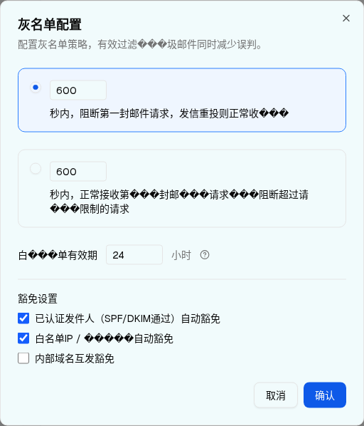
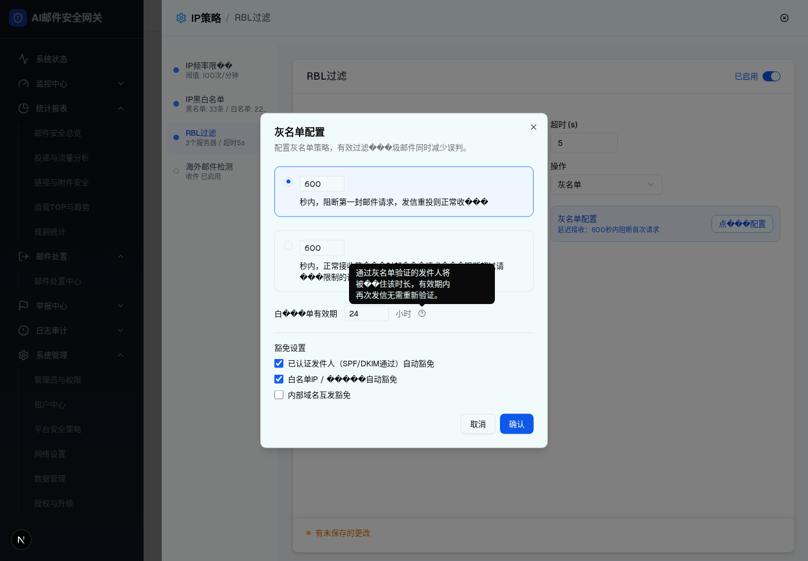

| 所属组件 | 3.1 灰名单配置 Dialog |
| 主文件 | filter-rules-pipeline-rbl-filter/index.html |
| demo 源 | connection-layer-page.tsx L2297–2427 |
| 触发路径 | 层级 2 入口卡 →「点���配置」→ setGreylistDraft({...8 个已生效状态}) → setShowGreylistDialog(true) |
| DOM 节点数 | 47（实测） |
| 实测尺寸 | 512 × 597 px，padding 24px，radius 10px，bg lab(97.7711 -3.04654 -1.63313) |
[role=dialog]。首次提取误取到抽屉（103 节点）；已改为「先标记抽屉，再取新出现的那个 dialog」，得到真正的灰名单 Dialog（47 节点）。

HelpCircle 后弹出的 Tooltip（整页截图）↓ 可操作预览：点整行或单选钮切换模式（切到「频率限制」= 层级 4）、编辑 3 个数字输入、勾选豁免项、hover ❓ 看 Tooltip、「取消」丢弃草稿、「确认」回写并置 hasUnsavedChanges。
配置灰名单策略，有效过滤���圾邮件同时减少误判。
mode = "rateLimit" → 这就是 层级 4 · 频率限制模式 →setShowGreylistDialog(false)，不回写 greylistDraft——所有改动丢弃，入口卡摘要不变。setHasUnsavedChanges(true)，再关闭 Dialog。入口卡摘要随之更新。如实复刻的缺陷：频率限制模式下没有「最大请求数」输入框——摘要里的「最多 5 次」来自永远无法修改的 maxRequests: "5"。见主文件 §9 D2 / §10 Q2。此外延迟秒数只有 HTML 原生 min="10"，无 spec 要求的「<60 秒警告 / >3600 秒警告」。
| # | 元素 | 类型 | 文案（实际渲染） | 默认值 | 样式（实测） | 交互 | i18n key |
|---|---|---|---|---|---|---|---|
| 1 | Dialog 根 | div[role=dialog][data-state=open] | — | — | 512×597；padding 24px；radius 10px；shadow lg | Esc / 遮罩关闭 | — |
| 2 | 标题 | h2 | 「灰名单配置」 | — | 18px / 600 | 无 | connection.greylistConfig |
| 3 | 描述 | p | 「配置灰名单策略，有效过滤���圾邮件同时减少误判。」乱码 | — | 14px；色 lab(48.496 0 0) | 无 | connection.greylistConfigDesc |
| 4 | 模式单选组 | div[role=radiogroup] | — | delay | gap 12px | 整行可点（onClick 在 row 上） | — |
| 5 | 延迟接收行 | div + button[role=radio] | 「{n} 秒内，阻断第一封邮件请求，发信重投则正常收���」 | 选中 | 选中：border lab(54.17 13.34 -74.68)（blue-500）+ bg blue-50；未选：border lab(90.952 0 0)，透明底。行高 90px（选中）/ 110px（未选，文案换行） | click 行或钮 → mode="delay" | connection.greylistDelayDesc |
| 6 | 延迟秒数 | input[type=number][min=10] | — | 600 | 80×28；radius 4px | onClick 上有 stopPropagation()，避免点输入框时误触整行 | — |
| 7 | 频率限制行 | div + button[role=radio] | 「{n} 秒内，正常接收第���封邮���请求���阻断超过请���限制的请求」 | 未选中 | 同上 | click → mode="rateLimit"（层级 4） | connection.greylistRateDesc |
| 8 | 窗口秒数 | input[type=number][min=10] | — | 600 | 80×28 | 同 #6 | — |
| 9 | 最大请求数 | — | — | maxRequests="5" | — | Dialog 内无此控件 仅存在于 state 与摘要文案（D2 / Q2） | |
| 10 | 白名单有效期 Label | label | 「白���单有效期」乱码 | — | 14px；shrink-0 | 无 | connection.greylistWhitelistTTL |
| 11 | TTL 输入 | input[type=number][min=1] | — | 24 | 80×28 | onChange → 写 draft | — |
| 12 | TTL 单位 | span | 「小时」 | — | 14px，muted | 无 | connection.greylistHours |
| 13 | 帮助图标 + Tooltip | svg.lucide-circle-help(14×14) | 「通过灰名单验证的发件人将被��住该时长，有效期内再次发信无需重新验证。」 | — | cursor:help；Tooltip max-w-[260px] | hover 触发（实测 data-state="delayed-open"） | connection.greylistWhitelistTTLTip |
| 14 | 豁免分组标题 | label | 「豁免设置」 | — | 14px / 500；上方 border-t + pt-4 | 无 | connection.greylistExemptions |
| 15 | 豁免项 1 | input[type=checkbox] | 「已认证发件人（SPF/DKIM通过）自动豁免」 | 已勾选 | 16×16；accent-blue-600 | toggle → 写 draft | connection.greylistExemptAuth |
| 16 | 豁免项 2 | input[type=checkbox] | 「白名单IP / �����自动豁免」乱码 | 已勾选 | 同上 | toggle | connection.greylistExemptWhitelist |
| 17 | 豁免项 3 | input[type=checkbox] | 「内部域名互发豁免」 | 未勾选 | 同上 | toggle | connection.greylistExemptInternal |
| 18 | 取消按钮 | button outline | 「取消」 | — | 62×36；radius 8px | close，丢弃草稿 | common.cancel |
| 19 | 确认按钮 | button primary | 「确认」 | — | 60×36；bg lab(41.44 24.55 -79.19)；无边框 | 回写 8 字段 + setHasUnsavedChanges(true) + close | common.confirm |
| 20 | 右上关闭 | button + svg + sr-only span | 视觉为 ✕；无障碍文本 "Close" | — | 24×24 | close（等同取消） | — |
[data-spec='greylist-dialog']，mode = delay）| 比对项 | demo 实际 DOM | 预览 HTML | 一致 |
|---|---|---|---|
| 根节点 | div[role=dialog][data-state=open]（id="radix-_r_c_"） | div.dp-dialog[role=dialog][data-state=open] | ✅（id 为 Radix 随机值，未复制） |
| 节点总数 | 47 | 47 | ✅ |
| 直接子节点数 | 4（Header div、Body div、Footer div、Close button） | 4 | ✅ |
| 标题 / 描述 | h2「灰名单配置」+ p「配置灰名单策略，有效过滤���圾邮件同时减少误判。」 | 逐字一致（含 3 个 U+FFFD） | ✅ |
[role=radiogroup] | 1 个，含 2 个 div 行 | 同 | ✅ |
| radio 属性（delay） | id="greylist-delay" role="radio" aria-checked="true" data-state="checked" value="delay" type="button" | 同（逐属性） | ✅ |
| radio 属性（rate） | id="greylist-rate" aria-checked="false" data-state="unchecked" value="rateLimit" | 同 | ✅ |
| 选中指示器 | 仅 选中的 radio 内有 span > svg > circle（3 节点）；未选中 radio childNodes = 0 | 同（.ind 仅在 data-state=checked 时 display:inline-flex） | ✅ |
label[for] 关联 | for="greylist-delay" / for="greylist-rate" | 同 | ✅ |
| number 输入个数与值 | 3 个：600(min=10)、600(min=10)、24(min=1) | 3 个，值与 min 逐一相同 | ✅ |
| maxRequests 输入 | 不存在（DOM 中无第 4 个 number 输入） | 未包含（如实复刻） | ✅ |
| checkbox 个数与初值 | 3 个：checked=true, true, false | 3 个，true, true, false | ✅ |
| 帮助图标 | svg（circle + 2 × path），hover 后 data-state="delayed-open" | 同一 circle+2 path 结构 | ✅ |
| Tooltip 文案 | "通过灰名单验证的发件人将被��住该时长，有效期内再次发信无需重新验证。" | 逐字一致（含 2 个 U+FFFD） | ✅ |
| Footer 按钮文案 | "取消" / "确认" | 同 | ✅（注：不是「确定」——首次脚本按「确定」选择失败） |
| 关闭按钮 | button > svg(2 path) + span "Close"（sr-only） | 同，span 用 clip 隐藏 | ✅ |
| 切到 rateLimit 后节点数 | 仍为 47（指示器 3 节点在两个 radio 间移动） | 同（display 切换，节点常驻） | ⚠ 语义一致，实现方式不同（见下） |
差异说明：demo（Radix RadioGroup）在切换模式时卸载/挂载指示器 span > svg > circle，节点总数恒为 47；预览为简化实现让指示器常驻 DOM、以 display 控制显隐，因此预览的静态节点数恒比 demo 多 3。可见 DOM 与 data-state/aria-checked 语义完全一致，此为刻意的实现简化，已记录不作为缺陷。